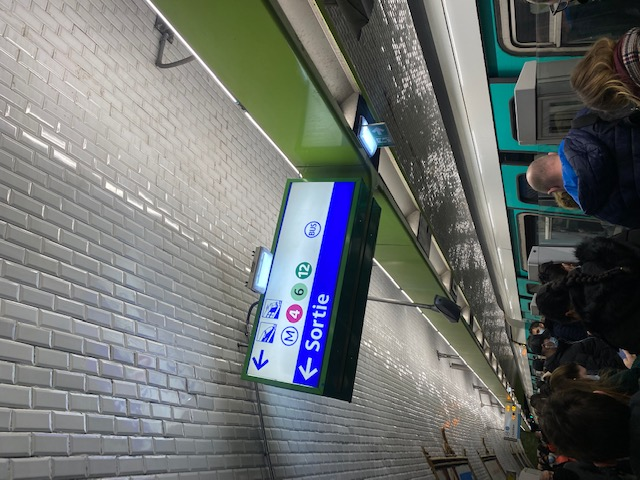
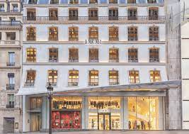

My Experiences
I wanted to study abroad in Paris because I was fascinated with their arts, culture, and food. Study abroad started mid January and ended the first week of May. Below I am going to share with you my daily rountine as an abroad study in Paris.

I lived in area called Bercy Village. Paris is a large city, and within the city they have 20 districts or in french "arrondissements". I lived in Bercy Village, which is considered to be the 12th district. A fun fact about Paris, is that on the map, the districts numbered in a sprial pattern, where the 1st district is central to Paris. District 1 has cool places such as the Louvre.

The easist way to get around Paris, is by their own public transpotation system, The Metro. The Metro is made up of 16 interconnected lines with over 133 lines. Their system is known to be one of the oldest around the world, but it is still ahead of its time. When taking their Subway systems for the fist time there were a few thigs that shocked me.
- All platforms have barriers
- Some trains do not have a conductor and self-driven
- Trains come pretty often The longest wait I had for a train was about 5 min
When taking the train in Paris here are some things you need to know
- Beware of PickPocketing (it's pretty common)
- Avoid being loud
- Be sure to purchase your Pass Navigo | This is pass you purchase that will get you all over Paris by train

While aboard in Paris you are required to take a language course, which you are placed in depending you lanuage placement test. Other than that the classes are pretty interesting. My list of courses is as follows
- Luxury Brand Management
- The History of Art and Fashion in France
- French Media and Politics
- Intercultural Management
- French 1
My favorite class was The History of Art and Fashion. Before coming to Paris, I was always interested in fashion , but did know much History. This class gave me backgroud history of many Paris Haute fahichion houses. In this class we when to a class trip to the Dior flagship store, which was amazing